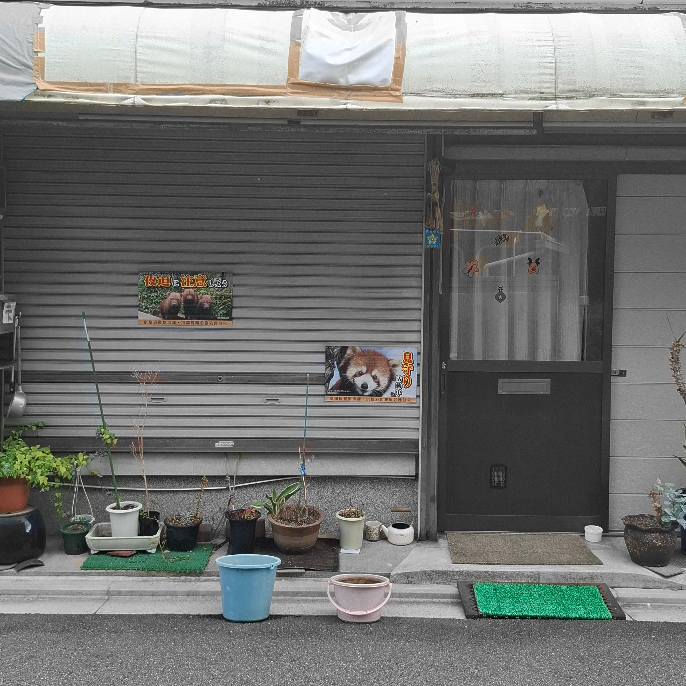
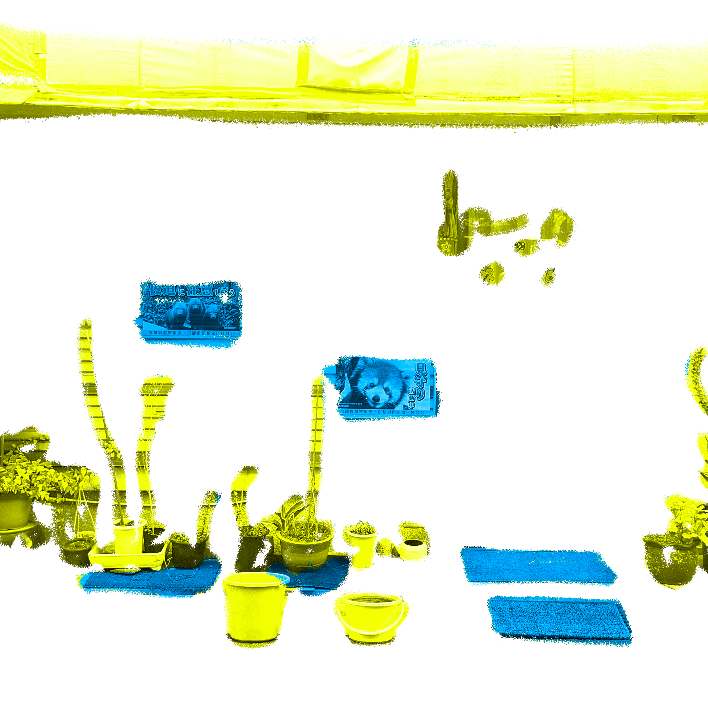
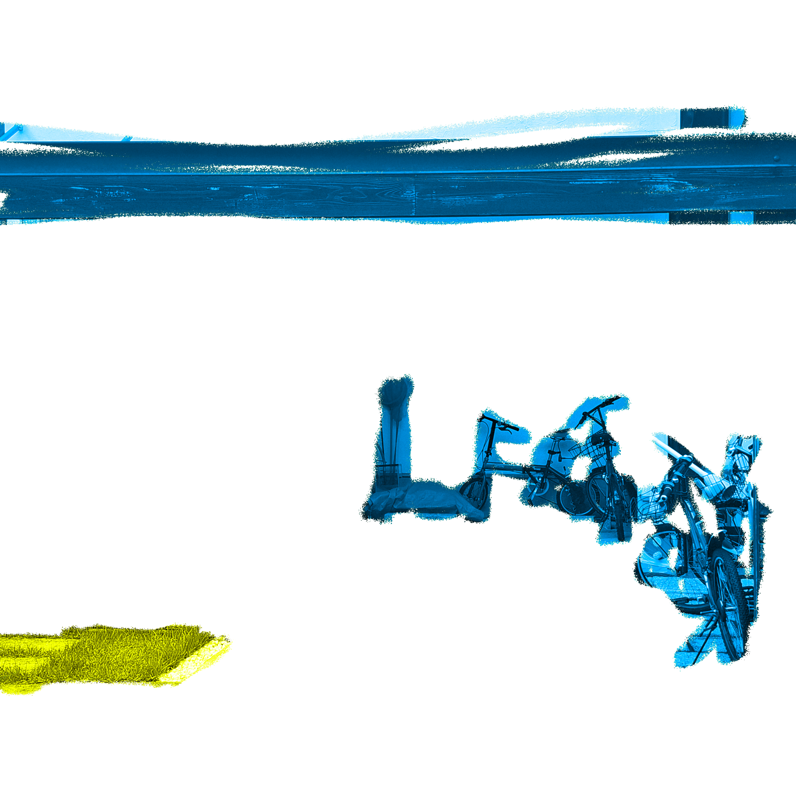
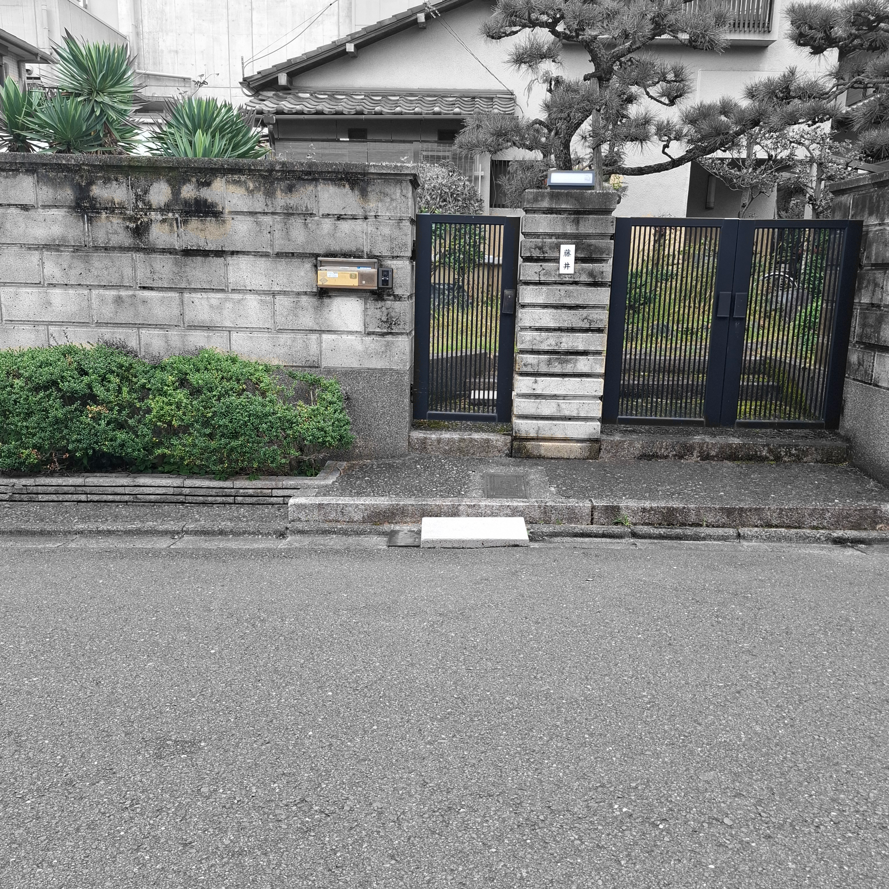
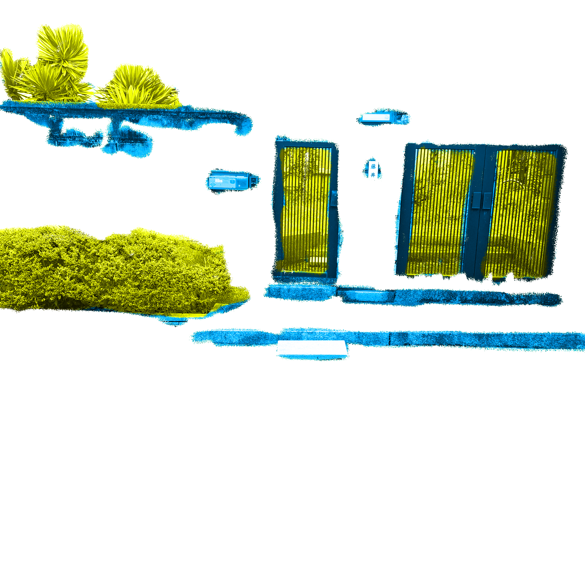

路上には、通行人のアテンションを集める要素がちりばめられている。これは、住人が意識的に配置したものでもあるし、そうでないものもある。通行人にとっては、そこにサービス精神を感じるものと、そうでもないものがある。
よく見かける段差解消スロープは、上記のアテンションとサービス精神の両方の観点において、ちょうど中立的な存在だと思える。
段差解消スロープのまわりにアテンション・サービス精神がどのように配置されているのかを観察することで、複数の路上を比較できるのではないかと考えた。
左画像は注目を集める要素をカラーで表し、右画像はそれらのうちサービス精神があると感じるものを黄色、ないと感じるものを青で表現した。





